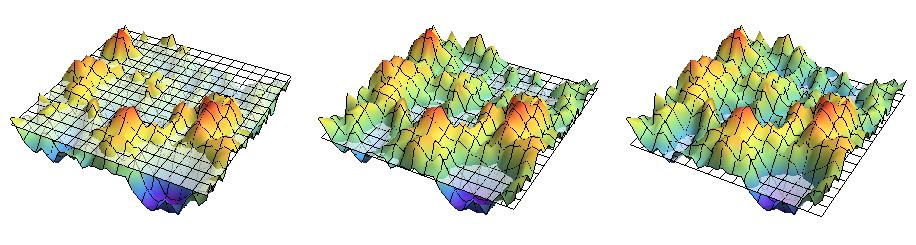

Gaussian random fields are fully characterized by their two-point correlation function or power-spectrum. Local properties, such as the density of maxima, minima and saddle points can be analytically evaluated. Non-local properties are known to be more complicated to evaluate. A good example of a non-local statistics which can be evaluated exactly is the Euler characteristic (Bardeen et al.). In this project we analytically study the non-local statistics of disconnected components, and loops (the homology) in super level set filtrations of two-dimensional Gaussian random fields.
This is work in collaboration with Rien van de Weygaert and Matti van Engelen.
Job Feldbrugge, Matti van Engelen, Rien van de Weygaert, Pratyush Pranav, Gert Vegter. Stochastic Homology of Gaussian vs. non-Gaussian Random Fields: Graphs towards Betti Numbers and Persistence Diagrams. 2019. [arXiv][pdf]
Pratyush Pranav, Rien van de Weygaert, Gert Vegter, Bernard J. T. Jones, Robert J. Adler, Job Feldbrugge, Changbom Park, Thomas Buchert, Michael Kerber. Topology and Geometry of Gaussian random fields I: on Betti Numbers, Euler characteristic and Minkowski functionals. 2018. [arXiv][pdf]
R. van de Weygaert, G. Vegter, H. Edelsbrunner, B. Jones, P. Pranav, C. Park, W. Hellwing, B. Eldering, N. Kruithof, E. Bos, J. Hidding, Job Feldbrugge, E. ten Have, M. van Engelen, M. Caroli, M. Teillaud Alpha, Betti and the Megaparsec Universe: on the Topology of the Cosmic Web. 2013. [arXiv][pdf]
Bachelor thesis advised by Rien van de Weygaert, Gert Vegter, and Elisabetta Pallant [pdf].
